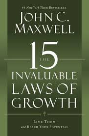

Notes on 'The 15 invaluable laws of growth'

# Chapter 1: The Law of Intentionality
"People are anxious to improve their circumstances but are unwilling to improve themselves; they therefore remain bound." -James Allen (As a man thinketh)
Growth Gap Traps: (Avoid these at all costs)
1. The Assumption Gap - I assume that I will automatically grow
2. The Knowledge Gap - I don't know how to grow (growth tools= attitude, goals, discipline, measurement and consistency.)
3. The Timing Gap - It's not the right time to begin ( Law of Diminishing intent says: the longer you wait to do something you should do now. the greater ther odds that you will never actually do it.)
4. The Mistake Gap - I'm afraid of making mistakes ("A mistake is simply another way of doing things" - Warren Bennis)
Growth Gap Traps: (continued)
5. The Perfection Gap - I have to find the best way
6. The Inspiration Gap - I don't feel like doing it (tough shit. start and stick with it)
7. The Comparison Gap - Others are better than I am (Be encouraged. this means you still have yet more to learn. You can only learn from those ahead of you.)
8. The Expectation Gap - I thought it would be easier than this Preparation (growth) + Attitude + Opportunity + Action (doing something about it) = LUCK
Do it Now. Before you get out of bed every morning, say "do it now" fifty times. At the end of the day before you go to sleep, the last thing you should do is say "do it now" fifty times.
FEAR vs. FAITH
Applying the law of intentionality:
1. Which of the gaps discussed in the chapter have caused you to neglect growing the way you perhaps could have?
The Assumption Gap - I assume that I will automatically grow
The knowledge Gap - I don;t know how to grow
The timing Gap - It's not the right time to begin
The mistake Gap - I'm afraid of making mistakes
The perfection Gap - I have to find the best way before I start
The inspiration Gap - I don't feel like doing it
The comparison Gap - Others are better than I am
The expectation Gap - I thought it would be easier than this
Now that you have gained insight about the gaps, what strategies can you create and implement to help you bridge the gaps? Write a specific plan for each gap that applied to you and take the first step of that plan today.
2. Most people underestimate the unimportance of nearly everything in their lives. They get distracted. As a result, they put growth on the back burner, and if they do grow, it happens accidentally instead of intentionally. Take a look at your calendar for the next twelve months. How much time have you specifically scheduled for personal growth? If you're like most people, your answer will be none. Or you may have planned to attend one event in the coming year. That's not going to cut it.
Rework your calendar so you have an appointment with yourself for personal growth every day, five days a week, fifty weeks a year. You might be thinking. What? I don't have time for that! That's probably true. Do it anyway. If you want to succeed you need to do whatever it takes. Get up an hour early. Stay up an hour later. Give up your lunch hour. Put in extra time one the weekends. If you don’t you'll have to prepare to give up your dreams and any hope of reaching your potential.
3. Start now. No matter what time of day you're reading these words, make a commitment to start growing today. Give that first hour before you go to sleep tonight. Put in the time today and for the next five days. You probably won't feel like doing it. Do it anyway.
# Chapter 2: The Law of Awareness
You must know yourself to grow yourself.
"No one can produce great things who is not thoroughly sincere in dealing with himself." -James Russel Lowell
To reach your potential you must know where you want to go and where you currently are.
3 kinds of people when it comes to having direction in life:
1. People who don't know what they would like to do.
2. People who know what they would like to do but don't do it.
3. People who know what they would like to do and do it.
"The first step toward change is awareness. The second step is acceptance." -Nathaniel Branden
10 Questions to help you find your passion and purpose:
1. Do you like what your doing now?
2. What would you like to do?
3. Can you do what you would like to do? "Almost every man wastes part of his life in attempts to display qualitie he does not possess"
4. Do you know why you want to do what you would like to do? "Your vision will become clear only when you look into your heart. Who looks outside, dreams. Who looks inside awakens." -Carl Jung
5. Do you know what to do so you can do what you want to do? Awareness + Action + Accountability + Attraction
6. Do you know people who do what you would like to do?
Get committed. Pay people for their time if necessary.
Be consistent. Meet purposefully every month with someone who can teach you.
Be creative. Start with their books if you can't meet them in person.
Be purposeful. Spend two hours in preperation for every hour of interaction.
Be reflective. Spend two hours in reflection for every hour of interaction.
Be grateful. These people are gifts to your personal growth; be sure to let them know.
7. Should you do what you'd like to do with them?
8. Will you pay the price to do what you want to do?
9. When can you start doing what you'd like to do?
10. What will it be like when you get to do what you'd like to do?
If there were ever a time to dare,
to make a difference,
to embark on somethign worth doing,
It is now.
Not for any grand cause, necessarily-
But for something that tugs at your heart,
Somethings that's your aspiration,
Something that's your dream.
You owe it to yourself to make your days here count.
Have fun.
Dig deep.
Stretch.
Dream big.
Know, though, that things worth doing seldom come easy.
There will be good days.
And there will be bad days
There will be times when you want to turn around,
Pack it up, and call it quits.
Those times tell you that you are pushing yourself,
That you are not afraid to learn by trying.
Applying the law of awareness
The questions in this chapter are designed to prompt you to know yourself and get on course to do what you were made to do in life. Here is a streamlined version of the questions. Spend a significant amount of time answering them so you have a plan of action to follow when your done.
1. What would you like to do?
2. What talents, skills, and opportunities do you possess that support your desire to do it?
3. What are your motives for wanting to do it?
4. What steps must you take (beginning today) to start doing what you want to do?:
-awareness
-action
-accountability
5. Whose advice can you get to help you along the way?
6. What price are you willing to pay? What will it cost you in time, resources, and sacrifices?
7. Where do you most need to grow? (You must focus on your strengths and overcome and weaknesses that would keep you from reaching your goal.)
# Chapter 3: The Law of the Mirror
You must see value in yourself to add value to yourself
"Personal development is the belief that you are worth the effort, time. and energy needed to develop yourself." -Dennis Waitley
Self-esteem is the single most significant key to a person's behaviour. Low self-esteem puts a ceiling on our potential.
"No factor is more important in people's psychological development and motivation than the value judgements that make about themselves." -Nathaniel Branden
"If you feel inadequate to face challenges, unworthy of love and respect, unintitled to happiness, and fear assertive thoughts, wants, or needs - if you lack basic self-trust, self-respect, and self-confidence - your self-esteem deficiency will limit you, no matter what other assets you possess."
10 suggestions to help you build your self-image
1. Guard your self-talk. Force positive thought. Autosuggestion
2. Stop comparing yourself to others.
3. Move beyond your limiting beliefs. "When a man has put a limit on what he will do, he has put a limit on what he can do." - Charles Schwab
Identify a limiting belief that you want to change. Determine how the belief limits you. Decide how you want to be, act, or feel. Create a turnaround statement that affirms or gives you permission to be, act, or feel this new way.
4. Add value to others. It's hard to feel bad about yourself when you're doing something good for someone else.
5. Do the right thing, even if it's the hard thing. Being true to yourself and your values is a tremendous self-esteem builder.
6. Practice a small discipline daily in a specific area of your life. If there is an area in your life that seems overwhelming to you- health, work, family, or something else- try chipping away at it a little bit every day instead of tackling it all at once. Since your self-worth is based upon the positive habits, actions and decisions you practice every day, why not build your self-esteem and tackle your biggest problems at the same time? Don’t fret or worry about it; do something specific about it. Discipline is a morale builder. Boost yours by taking small steps that will take you in a positive direction.
7. Celebrate small victories.
8. Embrace a positive vision for your life based on what you value.
9. Practice the One-word strategy.
10. Take responsibility for your life.
Applying the law of the mirror
1. Make a list of all of your best qualities. If you have positive self-esteem, then this will probably be pretty easy for you. If you don't, it may be a struggle. Don't give up. If needed, spend days or weeks creating the list. Don't stop until you have written a hundred positive things about yourself.
If it took you long time to create this list, then you need to spend time every day reading through it to remind yourself of your value. Remember, if you do not value yourself, you will have a very difficult time adding value to yourself.
Using this list as a springboard, decide on the one-word that best describes you. Make this word your North Star as you begin adding value to yourself.
2. Few things impact a person's self-esteem more than the way they talk about themselves on a day-to-day basis. Are you aware of how you talk to yourself? Keep track by using your smartphone or carrying an index card so you can tally the number of times each day this week that you think something positive or negative about yourself. In addition, you can ask close friends or family members to tell you whether they think you see yourself in a favourable or unfavourable light.
3.If you want to feel valuable, add value to others. How much time every day and every week do you spend time focusing on others and adding value to them? Do you serve others through a volunteer organization? Do you mentor people? Do you give assistance to others less fortunate than yourself?
If you aren’t doing so already, find a way to serve and add value to others on a weekly basis. Do something that utilizes your strengths, benefits others, and makes you feel good about yourself. Start small. If you're already serving, then do more. It's a good rule of thumb to give a tenth of your time to serving and adding value to others.
# Chapter 4: The law of Reflection
Learning to pause allows growth to catch up with you.
"Follow effecetive action with quiet reflection. From the quiet refelction will come ever more effective action." -Peter F. Drucker
A change in Paradigm.
The power of pausing. Learning to pause allows growth to catch up with you. That's the law of reflection.
1. Reflection turns experience into insight
2.Everyone needs a time and a place to pause.
3. Pausing with intention expands and enriches thinking
"When you are able to create a lonely place in the middle of your actions and concerns, your successes and failures slowly can lose some of their power over you." -Henri J. M. Nouwen
4. When you take time to pause, use your I's
-Investigation
-Incubation
-Illumination
-Illustration
Good questions are the heart of reflection. "Successful people ask better questions, and as a result, they get better answers." -Anthony Robbins
Personal awareness questions
1. What is my biggest asset?
2. What is my biggest liability?
3. What is my highest high?
4. What is my lowest low?
5. What is my most worthwhile emotion? Love
6. What is my least worthwhile emotion? Self-pity, resentments
7. What is my best habit? "What we do on some great occasion will depend on what we are; and what we are will be the result of previous years of self-discipline." -H. P. Liddon
8. What is your worst habit?
9. What is most fulfilling to me?
10. What do I prize most highly? Faith. "Faith is trusting in advance what will only make sense in reverse." - Phillip Yancey
"The wise man questions himself, the fool others." -Henri Arnold
Applying the law of reflection
1. Have you created a place where you can consistently and effectively pause and reflect? If not, do so immediately. First, figure out what kind of environment will be good for you. Among the places I have chosen over the years are a rock outdoors, a small isolated room where no one would bother me, and a special chair in my office. Figure out what works for you, and stick with it for as long as it's effective.
2. Schedule time to pause and reflect. If you don’t, it will always get shuffled off your to-do list. Ideally, you would spend a short time pausing to reflect at the end of every day (between ten and thirty minutes), a significant time every week (at least an hour or two), part of a day several times a year (half a day) and an extended time annually (as little as a day and as much as a week). Put these times to pause on your calendar and guard them as you would your most important appointments.
3. Cartoonist Henri Arnold said "The wise man questions himself, the fool others." The Law of Reflection will do you little good unless you are intentional in your thinking time. You make yourself intentional by asking yourself tough questions.
Where do you most need to grow right now? Is it in self-management? Is there an issue that you can't seem to wrestle down? Are you experiencing a plateau in your career? Are you failing to win at the most important relationships in your life? Do you need to examine or reexamine your purpose? Do you need to assess what you should be doing in your second half?
Whatever your issue is, create questions around it and spend time writing your answer to those questions during your scheduled times of reflection.
# Chapter 5: The law of Consistency
Motivation gets you going, Discipline keeps you growing
"The hallmark of excellence, the test of greatness, is consistency" -Jim Tressel
1. Do you know what you need to improve?
2. Do you know how you are supposed to improve?
-Match your motivation to your personality type
-Start with the simple stuff
-Be patient
-Value the process
3. Do you know why you want to keep improving?
4. Do you know when you are suppossed to improve? Right now.
In the end, hard work is really the accumulation of easy things you didn't do when you should have. It's like diet and exercise. Start small day by day and watch the law of the Compound Effect.
Be growth-focused and goal-conscious
Consistently Productive
"The great composer does not set to work because he is inspired, but becomes inspired because he is working." -Ernest Newman
If you develop the habits of success, you'll make success a habit.
Applying the law of consistency
1. Align your methods of motivation with your personality type. Use whatever personality profile you prefer to study your personality type. Onc eyou have agood handle on what makes your perosnality type tick, then develop a daily growth system that is simple and plays to yoyr strengths.
2. It's difficult to remain engaged in anything if you have not found a way to value and appreciate the process. Make a list of everything you like about personal growth. If your list is very short, really work at it. Anything you can find as motivation will help you to develop better growth habits.
3. The more whys you have pursuing personal growth on a daily basis, the more likely you will be to follow through. Start compiling those whys. Think of immediate benefits as well as long-term ones. Consider reasons related to purpose, vision, and dreams. Think of how it will help you relationally, vocationally and spiritually. Any reason to grow is a good reason as long as it's your reason.
# Chapter 6: The law of environment
Growth thrives in conductive surroundings
"The first step towards success is taken when you refuse to be a captive of the environment you first find yourself in." -Mark Caine
Change depends on your choices
"Whether you are a success or failure in life has little to do with your circumstances; it has much more to do with your choices." -Nido Qubein
Six choices to put ourselves in a better place for growth:
1. Assess your current environment
2. Change yourself and the environment
3. Change who you spend your time with
4. Challenge yourself in your new environment
5. Focus on the moment
6. Move forward despite criticism
Applying the law of environment
1. Assess your current environment when it comes to growth by answering true or false to each of the following ten statements:
1. Others are ahead of me
2. I am continually challenged
3. My focus is upward
4. The atmosphere is affirming
5. I am often out of my comfort zone
6. I wake up excited
7. Failure is not my enemy
8. Others are growing
9. People desire change
10. Growth is modelled and expected
If you answer false to more than five of the statements, your current environment may be hampering your growth. You will need to determine whether you need to change or improve your environment in order to reach your potential.
2. Assess your personal-growth needs in the three main areas mentioned in the chapter:
The right soil to grow in: what nourishes me? Growth.
Use the following list to create your own to assess what nurtures you:
Music - what songs life me?
Thoughts - What ideas speak to me?
Experiences - What experiences rejuvenate me?
Friends - What people encourage me?
Recreation - What activities revive me?
Soul - What spiritual exercises strengthen me?
Hopes - What dreams inspire me?
Home - What family members care for me?
Giftedness - What blessings activate me?
Memories - What recollections make me smile?
Books - What have I read that changed me?
The right air to breathe in: what keeps me alive? Purpose.
Review your answers to the questions at the end of the law of Awareness and the Law of Consistency chapters. Use them to develop a purpose statement for your life. Don't expect it to be perfect or permanent. It will probably continue to grow and change as you do, but it will give you a stronger sense of direction now.
The right climate to live in: what sustains me? People.
Make a list of the people who are currently most influential in your life: friends, family, colleagues, employers, mentors, and so on. Be sure to also include anyone you spend a substantial amount of time with. Then scan the list and determine who on the list is "larger" than you: more skilled or more talented, farther ahead professionally, more solid in character or in any other significant way. If the majority of people are not stretching you, you need to find additional people who will help you change and grow.
3. Significant growth will not occur in your life if your are not continually challenged in your environment. Set specific goals for yourself that are beyond your current capabilities. In addition, review your calendar for the upcoming month. Look for the best potential growth opportunity in each week and plan for it by asking yourself questions similar to the ones you contained in the chapter.
# Chapter 7: The Law of Design
To maximize growth, develop strategies
"If you don't design your own life plan, chances are you'll fall into someone else's plan. And guess what they may have planned for you? Not much." -Jim Rohn
Glancing backaords and planning forward. Do it yearly and quarterly.
Life Lessons
1. Life is very simple but keeping it that way is very difficult
2. Designing your life is more important than designing your career
3. Life is not a dress rehearsal
4. In planning your life multiply everything by two
To develop strategies, depend on systems
"Systems permit ordinary people to achieve extroardinary results predictably. However without a system, even extroardinary people find it difficult to predictably achieve even ordinary results." -Michael Gerber
What systems include:
1. Effective systems take the big picture into account
2. Effective systems make use of priorities "What is the most valuable use of my time now?"
3. Effective systems include measurement
4. Effective systems include application
5. Effective systems employ organization
6. Effective systems promote consistency
"An idealist believes the short run doesn't count. A cynic believes the long run doesn't matter. A realist believes that what is done or left undone in the short run determines the long run." -Sydney J. Harris
In other words, if you want to succeed in the long run, you must learn to be consistent day in and day out, week in and week out, year in and year out. You will never change your life until you change something you do daily. The secret to success is found in your daily routine.
Applying the law of design
1. Take some time to assess which areas in your life receive the most of your strategic planning time. Here is a list of areas to get you thinking. Add others that apply to you:
Career
Faith
Family
Health
Hobby
Mariiage
Personal Growth
Vacation
Have you been strategic in your approach to designing strategies and systems for your life? If not, why not? If so, where gave you placed the most emphasis? Does your past behavior line up with what you say your priorities are? How would you like them to be?
2. Begin developing (or rfining) systems for yourself that will maximize your time and increase your efficiency. Brainstorm a list of areas where you desire to imporve, are experiencing a problem, or sensing an opportunity. Try to create a system to help you for each. As you design them, make sure tat each takes into account the following:
The big picture - will thebsystem help you reach your big picture goals?
Your priorities - Is the system consistent with your values and commitments?
Measurement - Does the system give you a tangible way to judge ig youve succeeded?
Application - Does the system have a bult-in bias toward action
Organization - Does the system make better use of your time than what you;re doing now?
Consistency - Can and will you easily repeat the system on a regular basis?
Don't be reluctant to make adjustments to systems you develop or even abandon them if they don;t serve you well. However, you may want to try out any system you develop for at least three weeks (te normal time needed to start developing. a positive habit) before evaluating it's vlidity.
3. Many people who try to develop strategies for their life and growth make them too complicated. Any system you develop should be simple and straightforward. To test the ones you dvelop, try this: Explain them to a friend and see if they pass two tests. The first is whether you can explain it clearly. If you can't, it may be too complicated. The second is to see if you can explain it clearly. If you can't, it may be too complicated. The second is to see if your friend knows a better or simpler way of achieving the same goal.
# Chapter 8: The Law of Pain
Good management of bad experiences leads to great growth
"Every problem introduces a person to himself." -John Mcdonell
Pain prompts us to face who we are and where we are. What we do with that experience defines who we become.
"Success in life comes not from holding a good hand, but playing a poor hand well."- Warren G. Lester
"Wanting everyone to be happy and making tough decisions were incompatible tasks. I learned that good leadership is disappointing people at a rate they can stand." -John C. Maxwell
"Experience isn't really the best teacher but it sure does serve as the best excuse for not trying to do the same silly thing again." -Frank Hughes
5 things to embrace regarding growing from pain
1. Choose a positive life stance
2. Embrace and develop your creativity
3. Embrace the value of bad experiences "Facing difficulties is inevitable. Learning from them is optional."
4. Make good changes after learning from bad experiences "A bend in the road is not the end unless you fail to make the turn." John C. Maxwell
5. Take responsibility for your life
Applying the law of pain
1. Assess your attitude toward negative experiences up to this point in your life. Based on your personal history, which of the following statements best describes how you have approached failure, tragedy, problems, and challenges that have caused you pain?
-I do anything and everything possible to avoid pain at all costs
-I know pain is inevitable, but I ignore it or block it out
-I know everyone experiences pain, so I just endure it when it comes
-I don't like pain, but I try to remain positive despite it
-I process the emotion of painful experiences quickly and try to find a lesson in them
-I process pain, find the lesson, and make changes proactively as a result
Your goal should be to progress from wherever you are currently on the above scale to the place where you make positive changes in the wake of bad experiences
2. In the past have you used bad experiences as a springboard for using creativity? If not, use a current difficulty to help you learn how to become more creative by doing the following:
Define the problem
Understand your emotion
Articulate the lesson
Identify a desired change
Brainstorm numerous pathways
Receive others' input
Implement a course of action
Remember, if you always do what you've always done, you'll get what you've always gotten. If you want to arrive at a new destination, you need to take a new path.
3. No insight, no matter how profound, has value to you unless it is attached to changes that you will make based on what you've learned. Personal development requires a bias toward action!
Spend some time recalling the last five bad experiences you've had in your life. Write down each experience, along with what - if anything - you learned from it. Then evaluate whether you decided to make changes based on what you learned and rate yourself on how well you did at implementing those changes in your life. Once you've assessed each bad experience, give yourself a grade from A to F on how well you managed those experiences. If you haven’t been an A or B student, you need to use the steps listed above to become better at the process.
# Chapter 9: The law of the ladder
Character growth determines the height of your personal growth
"Achievement to most people is something you do... to the high achiever, it is something you are." -Doug Firebaugh
"99% of leadership failures are failures of character." -Norman Schwarzkopf
1. I will focus on being better on the inside than on the outside- character matters
The inside influences the outside. "As we think in our hearts, so we become."
Our inside development is totally within our control. "Character is a quality that embodies many important traits such as integrity, courage, perseverance, confidence, and wisdom. Unlike your fingerprints that you were born with and can't change, character is something that you create within yourself and must take responsibility for changing." -Jim Rohn
2. I will follow the golden rule- people matter
"Ask yourself what you want other people to do for you, then grab the initiative and do it for them." -The Message
3. I will teach only what I believe- Passion matters
4. I will value humility above all virtues- Perspective matters
"The life of every man is a diary in which he means to write one story and writes another; and his humblest hour is when he compares the volumes as it is with what he hoped to make it" -J. M. Barrie
Remember the big picture
Recognize that everyone has weaknesses
Be teachable
Be willing to serve others
Be grateful
5. I will strive to finish well- faithfullness matters
"Habit is the daily battleground of character." -Dan Coats
Applying the law of the ladder
1. Asses where you have put most of your focus up until this point in your life. Has it been on improving on the inside or on the outside? Here are some of the ways you can do that: Compare how much you spent in the last twelve months on clothing, jewelry, accessories, and so on, versus how much you spent on books, conferences, and that sort of thing. Compare how much time you spent in the last month on personal and spiritual growth versus activities related to appearance. If you exercise regularly, examine what benefits you are striving for. Do they relate to inner health or outer appearance?
If your assessment reveals more of an outward focus than an inward one, then determine how to shift your focus by adding time, money, and attention to the things that will make you grow even if they do not show.
2. Plan to spend time in the coming months to regularly serve others. Putting aside your own agenda and putting others first will help you develop humility, character and others-mindedness. Start with your family if you aren't in the habit of doing things for them.
Another idea is to set aside at least an hour every week for volunteering. Schedule it, and then give it a hundred percent of your focus while you're serving.
3. U.S. Senator Dan Coats said, "Character cannot be summoned at the moment of crisis if it has been squandered by years of compromise and rationalization. The only testing ground for the heroic is the mundane. The only preparation for that one profound decision which can change a life, or even a nation, is those hundreds of half-conscious, self-defining, seemingly insignificant decisions made in private. Habit is the daily battleground of character."
What are you doing every day to develop the habit of character growth? Are you giving attention to your soul? Are you doing hard or unpleasant things? Are you practicing the golden rule and putting others ahead of yourself? Your character isn't set. You can improve it. It's never too late. You can change who you are and your overall potential by becoming a better person.
# Chapter 10: The law of the rubber band
Growth stops when you lose the tension between where you are and where you could be.
"Only a mediocre person is always his best." -W. Somerset Maugham
"God's gift to us: potential. Our gift to God: developing it." How do we do that? By getting out of our comfort zone. By continually stretching- not only physically but also mentally and emotionally and spiritually. Life begins at the end of our comfort zone. We go there by stretching.
1. Few people want to stretch
2. Settling for the status quo ultimately leads to dissatisfaction
3. Stretching always starts with the inside out
4. Stretching always requires change
"To grow, you must be willing to let your present and future be totally unlike your past. Your history is not your destiny." -Alan Cohen
"It's never too late to be what you might have been."
5. Stretching sets you apart from others
6. Stretching can become a lifestyle
"The greatest enemy of tomorrow's success is today's success. No one has ever made a significant impact after they won the Nobel Prize."
7. Stretching gives you a shot at significance
"The difference between what we do and what we are capable of doing would suffice to solve most of the world's problems." -Mahatma Gandhi
"A possibility is a hint from God. One must follow it." -Soren Kierkegaard
"To be what we are, and to become what we are capable of becoming, is the only end in life." -Robert Louis Stevenson
Applying the law of the rubber band
1. In what areas of your life have you lost your stretch and settled in? Wherever they are, you need to find internal reasons to seek the tension to stretch again. Tap into your internal discontent to get you going. Where are you falling short of your potential? What habits have you developed that are hindering you from moving forward? What areas of past success have you stopped winning in? Remember, change is the key to growth. Use your lack of satisfaction to get you started anyplace you've stalled.
2. Be strategic to maintain the tension between where you are and where you could be by continually resetting intermediate-range goals for yourself. If goals are too immediate, you lose the tension when you achieve them too quickly. If the goals are too lofty, they can seem too difficult to achieve and become discouraging.
What is the right time frame for you to maintain the tension? Three months? Six months? a year? Set goals for yourself according to your individual personality, and then keep revisiting them at the end of those time increments. You want the goal to be just barely within reach - not too easy, but not impossible either. Being able to figure this out is an art. But it will pay tremendous dividends in your life.
3. If you need an overarching goal to keep you stretching, think about what significant action you could take if only you become what you could be. Dream big, and set this as your lifetime goal.
# Chapter 11: The law of Trade-offs
You have to give up to grow up
"People will cling to an unsatisfactory way of life rather than change in order to get something better for fear of getting something worse." -Eric Hoffer
"You have to give up to grow up"
We must learn to see trade-offs as opportunities for growth
Will I go through this change or grow through this change?
"A sign of wisdom and maturity is when you come to terms with he realization that your decisions cause your rewards and consequences. You are responsible for your life, and your ultimate success depends on the choices you make." -Dennis Waitley
Trade-offs force us to make difficult personal changes
"The difference between where we are and where we want to be is created by the changes we are willing to make in our lives." -John C. Maxwell
Change is personal- To change your life YOU need to change
Change is possible- Everyone can change
Change is profitable- You will be rewarded when you change
"When we are no longer able to change a situation, we are challenged to change ourselves." -Viktor Frankl
The loss of a trade-off is usually felt long before the gain
Most trade-offs can be made at any time
A few trade-offs come only once
The higher you climb, the tougher the trade-offs
"The price of anything is the amount of life you exchange for it." -Henry David Thoreau
Trade-offs never leave us the same
Some trade-offs are never worth the price
trade-offs worth making
1. I am willing to give up financial security today for potential tomorrow
"There is no future in any job. The future lies in the man that holds the job." -George W. Crane
2. I am willing to give up immediate gratification for personal growth
"There are no shortcuts to anyplace worth going." Instant gratification and personal growth are incompatible
3. I am willing to give up the fast life for the good life
Create capacity and margin in your life by:
-delegate so you're working smarter, not just harder
-do what you do best and drop the rest
-get control of your calendar; otherwise other people will
-do what you love because it well give you energy
-work with people unlike so your energy isn't depleted
4. I am willing to give up security for significance
5. I am willing to give up addition for multiplication
My attitude in the beginning was "What can I do for others?" But that is addition. Once I began to learn leadership, my question changed to, "What can I do with others?" That's multiplication.
"He who would accomplish little must sacrifice little; he who would achieve much must sacrifice much."
Applying the law of trade-offs
1. Write your own list of trade-off principles. Start by using the list in the chapter to spark ideas:
-I am willing to give up financial security today for potential tomorrow
-I am willing to give up immediate gratification for personal growth
-I am willing to give up the fast life for the good life
-I am willing to give up security for significance
-I am willing to give up addition for multiplication
Think about worthwhile trade-offs you have made in the past that you believe will continue to be good ideas for the future. Also consider what might be needed for you to reach your potential along with what you might need to give up to fulfill it.
2. It's just as important for you to know what you are not willing to give up as it is to identify what you are willing to give up. Think through the things that are non-negotiable in your life and list them. Then for each, identify its greatest potential threat and what safety measures you need to put into place to protect it.
3. What trade do you need to make right now that you have been unwilling to make? Most people settle in and learn to live with a limitation or barrier that can be removed by making a trade. What is that next thing you need to trade for? And what must you give up to get it?
# Chapter 12: The law of curiosity
Growth is simulated by asking why?
"Some men see things as they are and ask why. Others dream things that never were and ask why not." -George Bernard Shaw
"All meaningful and lasting change starts first in your imagination and then works its way out." -Albert Einstein
10 suggestions for cultivating curiosity:
1. Believe you can be curious
2. Have a beginner's mind-set
"My greatest strength as a consultant is to be ignorant and ask a few questions." -Peter Drucker
3. Make why your favourite word
"One's first step in wisdom is top question everything- and one's last is to come to terms with everything."
4. Spend time with other curious people
5. Learn something new every day
6. Partake in the fruit of failure
7. Stop looking for the right answer
8. Get over yourself
9. Get out of the box
"There are no rules around here! We're trying to accomplish something!" -Thomas Edison
10. Enjoy your life
"The race will go to the curious, the slightly mad, and those with an unsatiated passion for learning and daredeviltry." -Tom Peters
Applying the law of curiosity
1. Think about the three to five major areas of your life where you focus most of your time and energy. How do you see yourself in each of those areas? Do you think of yourself as an expert or a beginner? If you see yourself as an expert, you may be in trouble when it comes to further growth. Beginners know there is a lot to learn and are open to every possible idea. They are willing to think outside of the box. They don't get hung up on preconceived notions. They are willing to try new things.
If you have a beginner's mind-set in an area, do everything you can to maintain it. If you have come to think of yourself as an expert, beware! Find a way to rekindle a learner's attitude. Find a mentor who is ahead of you in that area. Or do what Richard Feynman did: Look for the fun again.
2. Make a list of the people you spend the most time with in a given week. Now rate each person on his or her level of curiosity. Are the majority of people in your world questioners? Do they often ask why? Do they like to learn new things? If not, you need to make some intentional changes to spend time with more curious people.
3. One of the greatest obstacles to curiosity and learning is the reluctance to look foolish in the eyes of other people. There are two easy ways to tell if this is a potential problem in your life: The first is being afraid to fail. The second is taking yourself too seriously.
The cure is to take what I call "learning risks." Sign up to do or learn something that takes you completely out of your comfort zone. Take an art class. Sign up for dance lessons. Study a martial art. Learn a foreign language. Find a master at calligraphy or bonsai to train you. Just be certain to pick something that you find fun, where you cannot be seen as an expert, and that is far out of your comfort zone.
# Chapter 13: The law of modelling
It's hard to improve when you have no one but yourself to follow
The most important personal-growth phrase you will ever hear a good leader say to you is "follow me."
Who should you follow?
1. A good mentor is a worthy example
2. A good mentor is available
3. A good mentor has proven experience "To know the road ahead, ask those coming back." -Chinese proverb
4. A good mentor possesses wisdom
5. A good mentor provides friendship and support
6. A good mentor is a coach who makes a difference in people's lives
Applying the law of modelling
1. Find a next-step mentor. Think about where you are currently in your career and the direction you would like to go. Look for someone you admire who is two or three steps ahead of you on that same track. This person doesn’t necessarily need to be in your organization. Look for the qualities needed in a good mentor: a worthy example, availability, proven experience, wisdom, willingness to be supportive, and coaching skills. If those are present in this individual, ask him or her to mentor you.
Before any meeting with a mentor, come prepared with three to five thoughtful questions, the answers to which will help you significantly. After you've met, work to apply what you've learned to your own situation. Don't ask for another meeting until you have done that. At your next meeting, begin the session by telling your mentor how you applied what you learned (or how you tired to apply it and failed so you can learn what you did wrong). Then ask your new questions. Follow this pattern, and your mentor will be rewarded for his or her effort and will probably be glad to continue helping you.
2. We all need people who can help us sharpen specific strengths or navigate though certain problem areas. Who do you talk to when you have questions related to marriage, parenting, spiritual growth, personal disciplines, hobbies, and so on? No one person can answer all f these questions. You need to find several individual "consultants" to help you.
Spend some time making two lists. First, list the specific strengths or skills you want to improve to reach your potential. Second, list the specific problem areas where you feel the need for on-going guidance. Begin looking for people with expertise in these particular areas and ask them if they would be willing to answer questions when you have them.
3. Do you have long-term models whom you observe, follow, and learn from, people who can give you advice regarding the big picture of your life and career? Or are you trying to improve while having no one but yourself to follow? If you haven't been asking others to help you on your journey, it's time to start. Most of us begin by looking for worthy models to follow by reading about them in books. Start there. But don’t leave it at that. Look for people who will give you access to their lives.
As you look for models and mentors I want tot give you a word of caution. Oftentimes, people look good from far away, but when you get to know them you discover qualities you don't admire. If that happens to you, please don't allow it to discourage you. There are plenty of people out there who have integrity and who are worthy to be respected and followed. Keep looking for them and you will find them.
# Chapter 14: The law of expansion
Growth always increases your capacity
"There is no finish line." -Nike commercial
"The potential that exists within us is limitless ad largely untapped... when you think of limits, you create them." -Robert J. Kriegel and Louis Patler
How to increase your thinking capacity
1. stop thinking more work and start thinking what works?
what am i required to do?
What gives me the greatest return?
What gives me the greatest reward?
2. stop thinking can I? and start thinking how can I? "learning is discovering that something is possible."
3. Stop thinking one door and start thinking many doors
-there is more than one way to do something successfully
-the odds of arriving anywhere increase with creativity and adaptability
-movement with intentionality creates possibilities
-failures and setbacks can be great tools for learning
-knowing the future is difficult; controlling the future is impossible
-knowing today is essential; controlling today is possible
-success is a result of continued action filled with continual adjustments
How to increase your capacity for action
1. Stop doing only those things you have done before and start doing those things you could and should do
"I am always doing that which I cannot do, in order to learn how to do it." -Pablo Picasso
2. Stop doing what is expected and start doing more than is expected
3. Stop doing important things occasionally and start doing important things daily
"If one advances confidently in the direction of his dreams, and endeavours to live the life which he has imagined, he will meet with success unexpected in common hours. He will pass an invisible boundary; new, universal, and more liberal laws will begin to establish themselves around and within him; and he will live with the license of a higher order of beings."
"The greatest of all miracles, is that we need not be tomorrow where we are today, but we can improve if we make use of the potentials implanted in us by God." -Samuel M. Silver
Applying the law of expansion
1. Have you made the mental transition from 'I can't!' or 'Can I?' to 'How can I?'' Test yourself. Do some dreaming. then ask yourself:
If I knew I could not fail, what would I attempt?
If I had no limitations, what would I like to do?
If finances were not an issue, what would I be doing with my life?
Take time and write your answers to those questions.
Now look at your answers. What is your gut-level response to them? Do you look at them and think, "that's far-fetched? This is impossible. How outlandish!" Or do you look at them and think "How can I do that? What must I do to make this happen? What will I have to trade to make this transition?" If it's the latter, you are mentally ready to expand your capacity. If it's the former, you still have work to do. Spend some time figuring out what's stopping you from believing you can make the changes necessary to expand your life.
2. Give yourself an effectiveness audit so you can be sure you are thinking "What works?" instead of "more work". Go back through your calendar and to-do lists from the past four weeks. (By the way if you aren't using some kind of system to plan your days, that's the first step you need to take.) Try to quantify the amount of time you spent on every action and activity during those four weeks. Then think about how much time you believe each activity should have taken, and give yourself an efficiency rating from A+ to F. Now sort all the activities into categories.
Where do you see patterns? What's working? What isn't working? What are you doing too much of, either because you're not being efficient enough or because the activity is off purpose? What changes do you need to make? Use the criteria of required, return, or reward to help you make judgements on what needs to change.
3. Do you have a plan and system to make sure you are doing what's important daily? First, define what is essential to you on a daily basis. "daily dozen"
Choose and display the right attitude
Determine and act on important priorities
Know and follow healthy guidelines
Communicate with and develop good thinking
Make and keep proper commitments
Earn and properly manage finances
Deepen and live out my faith
Initiate and invest in solid relationships
Plan for and practice good values
Embrace and practice good values
Seek and experience improvements
Once you've created your own list, figure out how you will manage to follow through on those priorities every day so you stay on track and continue to expand your potential.
# Chapter 15: The law of contribution
Growing yourself enables you to grow others
If you're not doing something with your life, it doesn't matter how long it is!
"I would rather have it said 'he lived usefully' than 'he died rich'." -Benjamin Franklin
In the morning "What good shall I do today?"
In the evening "What good have I done today?"
Be a river, not a reservoir
who mentors you an offers a baseline of wisdom?
who mentors you to aspire to be a better person?
who challenges you to think?
who cheers on your dreams?
who cares enough to rebuke you?
who is merciful when you have failed?
who shares the load in pressurized moments without being asked?
who brings fun and laughter into your life?
who gives you perspective when you become dispirited?
who inspires you to seek faithfully after God?
who loves you unconditionally?
Giving of your time, expertise, and resources without expecting anything in return is an unselfish act that makes the world a better place.
1. Be grateful
"you can get everything in life you want if you help enough people get what they want." -Zig Ziglar
no one succeeds alone.
2. Put people first
"There is no success without sacrifice. If we succeed without sacrifice, then it is because someone who went before us made the sacrifice. If you sacrifice and don't see success, then someone who follows will reap from your sacrifice."
"How far you go in life depends on your being tender with the young, compassionate with the aged, sympathetic with the striving, and tolerant of the weak and strong. Because some day in life you will have been all of these." -George Washington Carver
As a young leader, I erred in thinking that my vision came first. I believed that my most important responsibility was to get people to buy into me, where I was going, what I was asking. I thought people were supposed to serve me for the sake of the vision. The problem with hat kind of attitude is that the line between motivating people and manipulating them is very thin and easy to cross. -John C. Maxwell
The measure of success is not the number of people who serve you, but the number of people you serve.
3. Don't let stuff own you
"owning things is an obsession in our culture. If we own it, we feel it will give us more pleasure. The idea is an illusion." -Richard Foster Owning things doesn't bring real satisfaction. In general, if you try to feed emotional or spiritual needs with material things, all it does is make you hungrier for more things. It doesn't satisfy. However, if you meet those needs appropriately, then you can be content with or without a lot of possessions.
4. Don't let people own you
5. Define success as sowing, not reaping
"I consider the success of my day based on the seeds I sow, not the harvest I reap." -Robert Louis Stevenson
"No individual has any right to come into the world and go out of it without leaving behind him a distinct and legitimate reasons for having passed through it." -George Wahington Carver
6. Focus on self-development not self-fulfilment
Self-fulfilment thinks of how something serves me.
Self-development thinks of how something helps me serve others.
With self-fulfilment, feeling good is the product.
With self-development, feeling good is the by-product.
7. Keep growing to keep giving
"work harder on yourself than you do your job; your income is directly related to your philosophy, not the economy; and for things to change, you must change." -J. Earle Shoaff
Applying the law of contribution
1. What is your underlying desire in life: Is it self-fulfillment or self-development? Are your efforts designed to make you feel good? Or to make you be your best? Is your goal to be successful? Or to achieve significance? Are you trying to achieve so you can feel happy? Or are you trying to put yourself in a place to help others win?
These distinctions may seem subtle, but they really make a difference. Trying to feel fulfilled is a never-ending restlessness because you will never be completely satisfied with your progress. Trying to develop yourself is a never-ending journey and will always inspire you, because every bit of progress is a victory; yet there will always be new challenges to excite and inspire you.
2. Make sure that no person owns you. Make a list of the key people in your life. Now think about each relationship and determine if you are mostly the giver, you are mostly the taker, or the relationship is even.
If you are primarily the taker, then you need to make adjustments so the other person doesn't have power over you. How do you do that? By making the effort to out-give people in your life without keeping score. You can do this not only with your family and friends, but even with your employer. Make an effort to give more work than your organization pays you for. Not only will the people you work for and with value you, but you will add value to them. And if you have an opportunity to move on to bigger and better things, you will be able to do so knowing that you have always given your best.
3. I have one final application exercise for you in this book, and that is to put people first in your life. Write down your top three to seven goals and dreams. Now write down the names of the most important people in your life. Be honest with yourself. Which comes first? The people? Or your goals and dreams? If you are like II was early in my career, my agenda was first. Fortunately I realized very early in our marriage that I needed to put Margaret first. That opened the door for me to be less selfish in other areas of my life. Then when my children came along, I had to put them ahead of many other things. The longer I live, the more important people have become to me. At this stage in my life, nearly everything I do - even related to personal growth - is motivated by a desire to help others.
Make the decision to put others ahead of your own agenda. Put the development of people at the workplace ahead of your own advancement. Serve others instead of yourself. Commit to it, and then invite others in your life to hold you accountable. And remember, sometimes the seeds you sow take a long time to grow. But you always see a harvest.